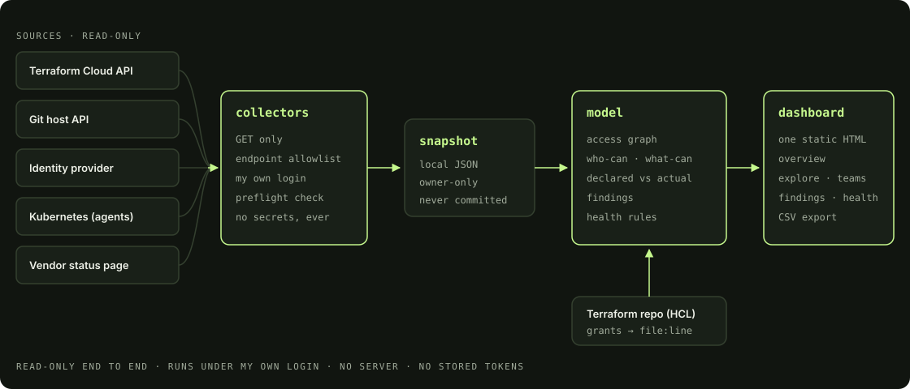
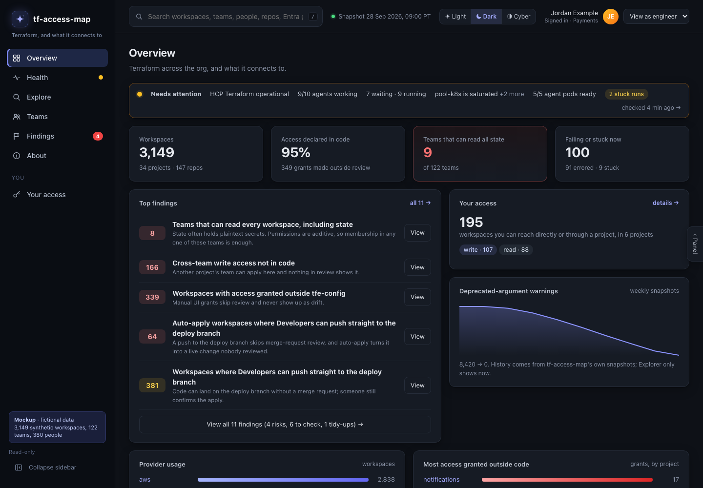
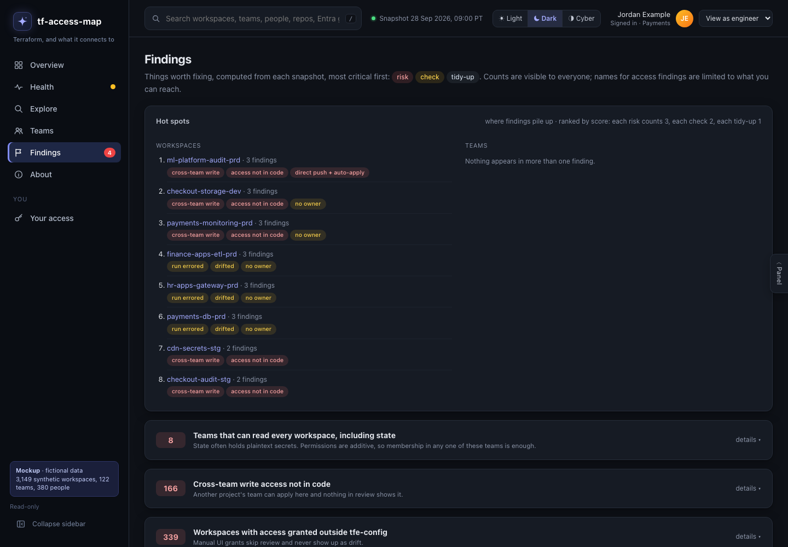
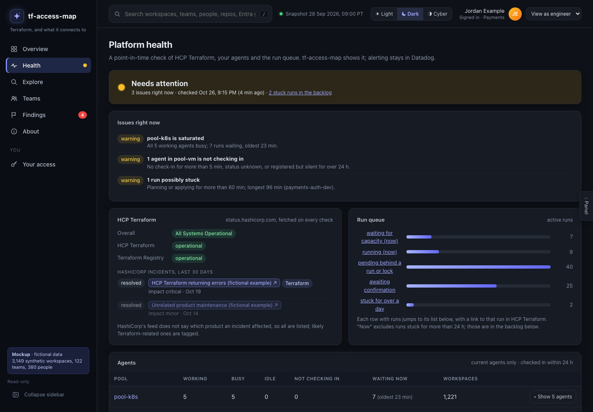

Mapping who can change what in Terraform Cloud
An access audit that would have taken weeks of clicking, done in days with a small read-only tool I built for myself.
The problem
Terraform Cloud is good at telling you what a workspace is. It is much worse at telling you who can change it.
Access is additive and comes from several places at once: an SSO group maps to a team, the team gets access to a workspace, or to a whole project, or to the entire organization. To answer "who can apply to this, or read its state?" for a single workspace, you click through several screens and add it up in your head. I needed that answer across thousands of workspaces and hundreds of teams.
By hand, that was weeks of work, and the answer would have been stale before I finished.
Context
- Scale: thousands of workspaces, hundreds of teams, a few dozen projects, and self-hosted agents running on Kubernetes.
- Most access was managed as code in a Terraform repository using the
tfeprovider. Most, not all. - The built-in tooling covers the rest. Terraform Cloud's Explorer already reports inventory, drift, and versions. It has no access view at all. So I didn't rebuild inventory; I built the missing part.
- One rule I set myself: the tool must not become the risk it is auditing. Anything holding an org-wide token is a target.
The choices
| Option | Good | Not so good |
|---|---|---|
| Click through the UI | No new tooling | Weeks of work, easy to miss a path, stale on arrival |
| Parse the Terraform repo only | Needs no credentials | Misses access granted outside code |
| Hosted dashboard with a service token | Always fresh, easy to share | A privileged token and a new service to secure |
| Local read-only snapshot, under my own login | Accurate, nothing new to secure | Only as fresh as the last run |
I went with the last one, then added repo parsing back as a second layer.
My first plan was actually "parse the repo only". It would have been wrong in the worst possible way: it would have reported no access where there was broad access, because some of the most consequential grants were never written in code. Code shows intent. The API shows reality. The gap between them is the finding.
What happened


The vision and the design rules were mine: what to answer, what it must never touch, and what "safe" meant. I built it with an AI coding assistant, which is how an idea became a working tool in days instead of weeks.
Five pieces, all plain Python standard library plus one HTML file:
- Collectors. GET-only by construction: the HTTP client has no method that can send anything else, and every path is checked against an allowlist before a request goes out. State, variables, runs, and tokens are unreachable. They run under my own login; the tool stores no credentials. The snapshot is a local file with owner-only permissions and is never committed. A preflight check confirms the login can see everything, and stops rather than quietly under-reporting.
- Access model. Turns the snapshot into a graph and answers
who-can <workspace>,what-can <team>, andperson <name>, plus a list of findings. - Declared vs actual. A small, strict evaluator for the subset of HCL the repo uses resolves every grant to a file and line. Anything it can't evaluate is marked unclear, never guessed.
- Linkage and health. Does each workspace's repo and deploy branch still exist, and is the branch protected? Which identity-provider group sits behind each team? Plus the run queue, stuck runs, agent pools, pod restarts and out-of-memory kills, and the vendor's status page.
- Dashboard. One static HTML page with the data embedded and no server: an overview, a faceted explorer, team pages, severity-sorted findings, platform health, and CSV export.


Refreshing everything is one command:
python refresh.py
python model.py who-can <workspace>The findings that mattered most were the kinds a UI hides: teams that can read every workspace's state, access granted outside code review, and auto-apply workspaces where a push to the deploy branch goes straight to a live change.




The results:
- Weeks of manual auditing done in days.
- Its first run matched the earlier manual numbers exactly, which is what made me trust the rest.
- Zero writes, no stored tokens, 150+ offline tests using fake API responses.
See everything, change nothing. Anything that changes something goes through a human-reviewed request.
What I'd do next
- Freshness over cleverness. A visible "last synced" banner saved me from trusting stale data more than once. Webhooks would beat re-running collectors.
- "Fix this" links that open a pre-filled merge request, so a finding turns into a reviewed change instead of a manual UI edit.
- A read-only API or MCP server, so an AI assistant could query it under the asker's own permissions.
- Keep it personal. I built it for my own use, and that is exactly why it could stay this simple: no server, no shared token, no new service to secure. It's on the workbench too.